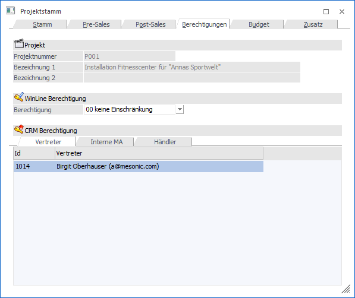

In dem Register "Berechtigungen" können die Berechtigungen für das Projekt vergeben werden.

Ø Projektnummer
An dieser Stelle wird die Projektnummer des aktuellen Projekts angezeigt.
Ø Bezeichnung 1 / Bezeichnung 2
An dieser Stelle wird die Bezeichnung bzw. Beschreibung des Projekts dargestellt.
Ø WinLine Berechtigung
Für jedes Projekt kann ein Berechtigungsprofil vergeben werden. Wenn der Anwender ein Projekt aufruft, wird geprüft, ob der Anwender einer Benutzergruppe zugeordnet wurde, welche in dem jeweiligen Profil enthalten ist und ob somit eine Bearbeitung erlaubt wäre (nähere Informationen entnehmen Sie bitte dem WinLine ADMIN - Handbuch).
Hinweis
Benutzern des Typs "Administrator" oder mit der Administratorenberechtigung "Benutzeradministrator" steht in der Auswahlbox der Punkt ">> Neues Profil" zur Verfügung. Über die Anwahl dieses Eintrags kann in der Folge ein neues Berechtigungsprofil angelegt werden.
Ø CRM Berechtigungen
Hier können die WEB-Benutzer hinterlegt werden die Zugriff auf dieses Projekt und deren Fälle haben sollen.
Die Berechtigungen sind in 3 Register unterteilt:
ü Vertreter
Hinterlegung der
WEB-Benutzer die einem Vertreter zugeordnet sind.
ü Interne MA
Hinterlegung der
WEB-Benutzer die als interne Mitarbeiter definiert sind.
ü Händler
Hinterlegung der
WEB-Benutzer die als Kunden bzw. Interessenten definiert sind.